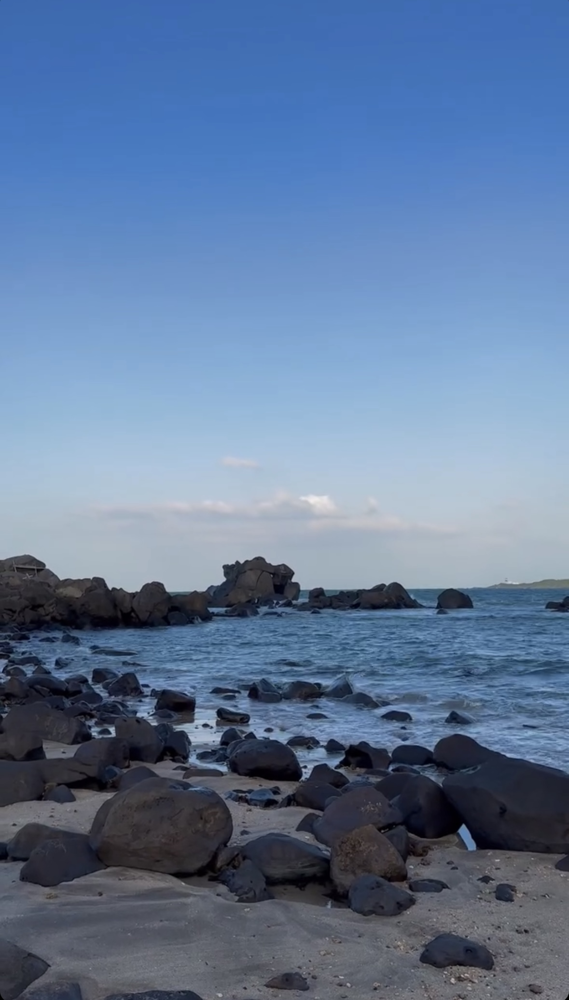

sea
"The sea, with its boundless expanse of azure waters, holds an enchanting allure that captivates the soul."
 The vastness of the sea holds endless wonders and dreams.Its rhythmic waves dance tirelessly upon the shore, whispering tales of ancient mysteries and untold adventures. The salty breeze carries with it a sense of freedom and tranquility, inviting one to lose themselves in the vastness of its embrace.
Beneath its shimmering surface lies a world teeming with vibrant marine life, a testament to the sea's endless vitality and beauty. Whether bathed in the golden light of dawn or cloaked in the soft hues of twilight, the sea remains a timeless source of inspiration, evoking a sense of awe and wonder in all who behold its majesty.
koala
"Perched high in the eucalyptus, a sleepy koala nuzzles its fluffy joey, basking in the warmth of the Australian sun."
.jpg) "Koala Cuteness: Nature's Delight"
"Koala Cuteness: Nature's Delight"
The koala, with its endearing round face and fuzzy ears, epitomizes the charm of Australia's wildlife. Nestled amidst the eucalyptus trees, these arboreal marsupials spend their days leisurely munching on eucalyptus leaves, their primary source of sustenance. Despite their sleepy demeanor, koalas possess a remarkable resilience, adapting to the challenges of their environment with ease. Their gentle nature and relaxed disposition have endeared them to people worldwide, symbolizing the peaceful harmony between humans and nature. As ambassadors of conservation, koalas remind us of the importance of preserving their natural habitat and safeguarding the delicate balance of our ecosystems for generations to come.
sunset
"As the sun dips below the horizon, painting the sky in hues of orange and pink, the world is embraced by the tranquil beauty of the sunset."
.jpg) "As day transitions to night, the sun's final rays illuminate the clouds, turning them into fiery masterpieces that captivate the soul."
"As day transitions to night, the sun's final rays illuminate the clouds, turning them into fiery masterpieces that captivate the soul."
As the day draws to a close, the sky transforms into a canvas of vibrant colors, with hues of red, orange, and pink blending seamlessly together. The sun, sinking below the horizon, casts its warm glow across the landscape, illuminating everything in its path. Shadows grow longer, and the world seems to pause, as if in awe of the breathtaking spectacle unfolding before it. With each passing moment, the intensity of the colors deepens, painting a picture of tranquility and serenity. As the final rays of sunlight disappear beyond the horizon, the sky takes on a deeper shade of blue, signaling the onset of night. Yet, even as darkness descends, the memory of the sunset lingers, a reminder of the beauty and wonder that exists in the natural world.
school
"School is not just a place to learn, but a community where knowledge, friendships, and memories are cultivated."
.jpg) ""Learning Hub: Nurturing Minds and Hearts""
""Learning Hub: Nurturing Minds and Hearts""
In the bustling halls of the school, young minds embark on a journey of discovery and growth. Here, amidst the hum of eager chatter and the rustle of turning pages, students immerse themselves in a world of knowledge and possibility. From the crisp pages of textbooks to the interactive discussions in classrooms, every corner of the school is a gateway to new insights and understanding. Beyond academics, the school is a melting pot of diverse talents and passions, where students explore their interests and unlock their potential. Guided by dedicated educators and fueled by curiosity, each day brings new opportunities for learning, collaboration, and personal development. As the bell rings and classes come to an end, the spirit of inquiry and camaraderie lingers, inspiring students to embrace the challenges and joys of their educational journey.